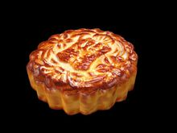

The idea that it originated from ancient emperors' sacrificial activities. In "the book of rites", it is recorded that "tianzi spring asahi, qixi moon", which is the moon festival, shows that in the spring and autumn period, emperors began to worship the moon and worship the moon. Later aristocrats and literati also followed suit and gradually reached the people.
The origin of Mid-Autumn festival is related to agricultural production. Autumn is the harvest season.The "autumn" word is: "the crops are ripe for autumn".On the Mid-Autumn festival in August, the crops and various fruit products are gradually mature, the farmer to celebrate the harvest, expressing the joy of the mood, the "Mid-Autumn festival" the day as a holiday. The meaning of "Mid-Autumn festival" is the middle of the autumn, the lunar calendar in August is a month in the middle of the autumn, is in the middle of this month on the 15th day, Mid-Autumn festival, therefore, may be the ancient custom of "autumn report" inherited.
Have historians study pointed out that the origin of the Mid-Autumn festival should be sui end, Yu Daye 13 August 15, pei ji with full moon as the conception, successful invention moon cakes, and gf army as the pay, successfully solved due to absorb huge Numbers sui rebel and commissary of the problems.
Here are some basic information of Mid-Autumn Festival
Date
Custom
Vacation
Circulating area
the fifteenth day of the eighth lunar month
Enjor Moon, sacrifice moon, eat mooncake and so on
One day in China
China's many ethnic groups and Chinese character culture circle states
Custom
Enjory Moon
On the 15th day of the lunar calendar, when the moon is the most round, everyone is outside to enjoy the large round and bright moon
Sacrifice Moon
Sacrifice Moon is rare now, but it is really worth to remember
Eat mooncake
I like this custom most! The mooncake is very delicious, I would eat mooncake every year 